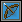
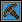
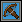
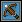
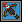

Creating weapons
Minimal examples by item type. All of them share type, tiers and display; only the template and model arguments change.
Sword (handheld item)
A normal sword uses the model_path template and a handheld model:
items:
custom_tiers:my_sword:
material: diamond_sword
template:
- custom_tiers:tiers
arguments:
type: model_path
tiers: 3
display: rare
model_path: minecraft:item/diamond_sword
If you use a custom sword model, its JSON must have "parent": "minecraft:item/handheld".
Bow
A bow uses the normal model and three pulling states:
items:
custom_tiers:my_bow:
material: bow
template:
- custom_tiers:tiers
arguments:
type: model_path_bow
tiers: 3
display: rare
model_path: minecraft:item/bow
Add these 3 lines:
arguments:
pulling_0: minecraft:item/bow_pulling_0
pulling_1: minecraft:item/bow_pulling_1 # the addon auto-completes them with
pulling_2: minecraft:item/bow_pulling_2 # "model_path" + "_pulling_<0-2>"
# ALIAS
# model_path_pulling_X: minecraft:item/bow_pulling_X
Crossbow
The crossbow adds the loaded-with-arrow and loaded-with-firework states:
items:
custom_tiers:my_crossbow:
material: crossbow
template:
- custom_tiers:tiers
arguments:
type: model_path_crossbow
tiers: 3
display: rare
model_path: minecraft:item/crossbow



Add these arguments as needed:
arguments:
arrow: minecraft:item/crossbow_arrow
firework: minecraft:item/crossbow_firework
pulling_0: minecraft:item/crossbow_pulling_0
pulling_1: minecraft:item/crossbow_pulling_1
pulling_2: minecraft:item/crossbow_pulling_2
# ALIAS
#model_path_arrow: minecraft:item/crossbow_arrow
#model_path_firework: minecraft:item/crossbow_firework
#model_path_pulling_X: minecraft:item/crossbow_pulling_X
Trident
For a trident with existing models:
items:
custom_tiers:my_trident:
material: trident
template:
- custom_tiers:tiers
arguments:
type: trident_model_path
tiers: 3
display: rare
model_path: custom_tiers:item/my_trident
If you prefer to generate it from a texture, use type: trident_auto with
texture and icon.
Add these arguments as needed:
arguments:
throwing: custom_tiers:item/my_trident_throwing
in_hand: custom_tiers:item/my_trident_in_hand
icon: custom_tiers:item/my_trident_icon
max_damage: 300
# ALIAS
#model_path_throwing: custom_tiers:item/my_trident_throwing
#model_path_in_hand: custom_tiers:item/my_trident_in_hand
# if no icon model is specified, model_path is used
#model_path_icon: custom_tiers:item/my_trident_iconFood (item/generated)
For food with a normal 2D icon:
items:
custom_tiers:my_food:
material: apple
template:
- custom_tiers:tiers
arguments:
type: model_path
tiers: 3
display: rare
model_path: minecraft:item/appleIf you use your own texture, create a 2D model and pass it as model_path:
{
"parent": "minecraft:item/generated",
"textures": {
"layer0": "custom_tiers:item/my_food"
}
}Blocks (model path)
A block uses its block model as model_path:
items:
custom_tiers:my_block:
material: stone
template:
- custom_tiers:tiers
arguments:
type: model_path
tiers: 3
display: rare
model_path: minecraft:block/stoneNext: armor, trims and shield.